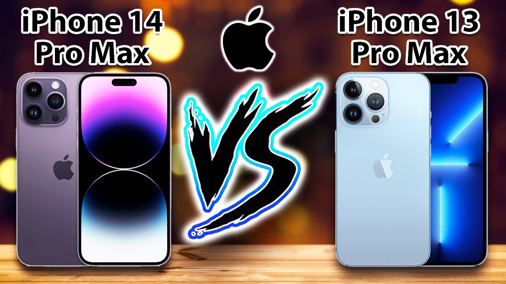
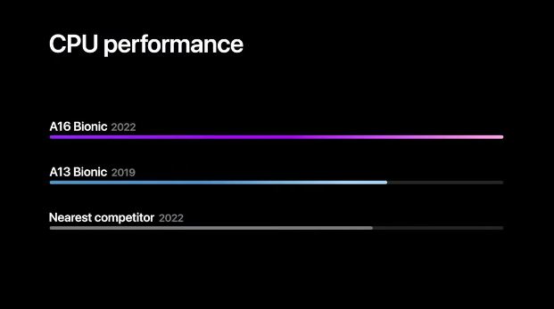
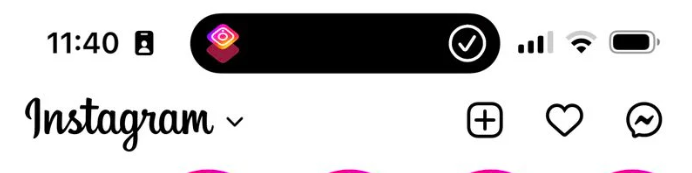

The iPhone 14 is the sucessor of the iPhone 13. It offers all the same features as the 13, but is slightly better. Essentially, the iPhone 14 is basically the same as the iPhone 13.
In this review, I will be going over four key components of the iphone 14.
The iPhone 14 looks nice. It has a sleek and rectangular design with sharp edges, similar to the iPhone 13. Apple offers a midnight, blue, starlight, purple, and red colour for their line of iPhone 14s. The phone's plating is made out of "aerospace aluminum" and the front screen is made of "ceramic shield," which is a material that is "tougher than any smartphone glass".

Like the iPhone 13, the iPhone 14 has the similar smooth back glass and the sharp rectangular edges, that stabs into ones fingers over a long period of use. The sides of the phone are made of aluminum.

The iPhone 14 is faster than the iPhone 13. With the new apple processors (A16 bionic) and chips, which contains new technologies and methods designed for efficiency, the iPhone 14 is able to outperform the iPhone 13 in almost every way imaginable. Upon the release of the iPhone 14, it was dubbed to have the brightest screen of any mobile device.
With the release of the iPhone 14, only one new app has been added into the phone. This app is called "dynamic island". Dynamic island is basically just the "shortcuts" app found in earlier versions of the iPhone. In fact, the shortcuts app was just moved to dynamic island. However, if one is really eager for new apps in the IOS software, they should be anticipating a newer release of an IOS version very soon.
